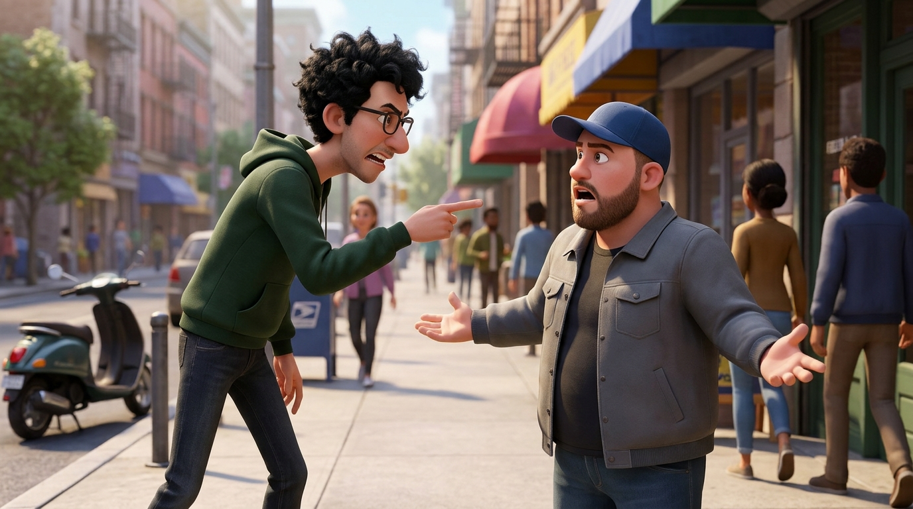
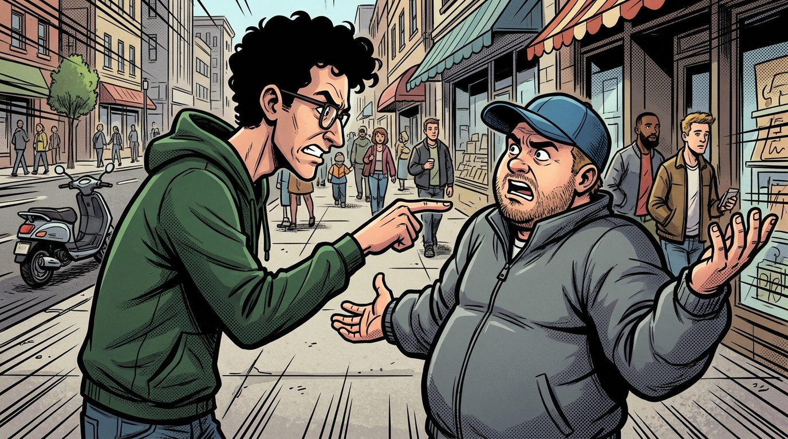
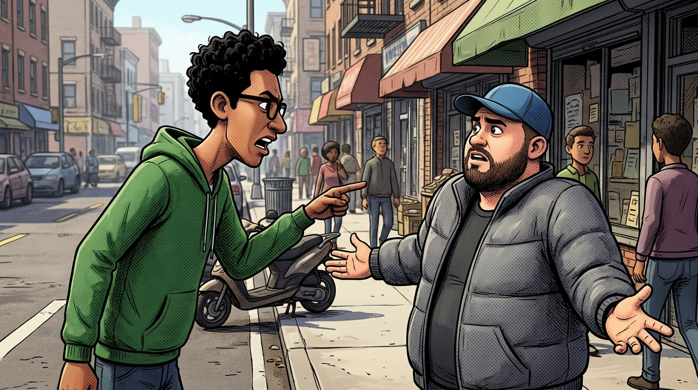

סגנונות לסרטון
אותה סצנה בשלושה סגנונות. תגיד לי איזה מהם, או מה לשנות.



שים לב: הדמויות לא יצאו זהות בין התמונות, למשל הצבע של העור והמעיל. בסרטון עצמו נפתור את זה עם "דף דמות" קבוע לכל אחד.
אותה סצנה בשלושה סגנונות. תגיד לי איזה מהם, או מה לשנות.



שים לב: הדמויות לא יצאו זהות בין התמונות, למשל הצבע של העור והמעיל. בסרטון עצמו נפתור את זה עם "דף דמות" קבוע לכל אחד.